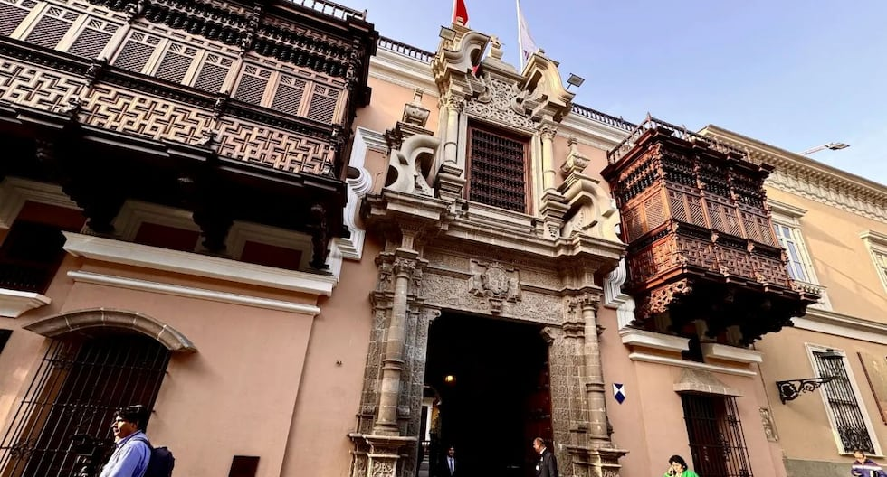

La Cancillería peruana comunicó oficialmente la decisión y el llamado inmediato del jefe de misión diplomática ante la República Islámica.

El Gobierno del Perú anunció este lunes la ruptura de relaciones diplomáticas con la República Islámica de Irán, una decisión que se produce en un momento de marcada tensión en Medio Oriente y que implica el retiro inmediato del embajador peruano acreditado en Teherán. La medida fue comunicada a través de un pronunciamiento oficial de la Cancillería, en el que se detallan los alcances del quiebre de vínculos y las instrucciones impartidas al personal diplomático peruano en el país persa.
De acuerdo con el comunicado difundido por el Ministerio de Relaciones Exteriores del Perú, la determinación responde al grave deterioro del escenario de seguridad regional y a la necesidad de que el Estado peruano fije una posición clara frente a los acontecimientos que vienen desarrollándose en esa parte del mundo. La Cancillería precisó que el embajador peruano en Irán ha sido llamado de manera inmediata a Lima para sostener consultas, y que las funciones consulares y diplomáticas quedarán suspendidas en tanto persista la actual coyuntura.
La ruptura de relaciones diplomáticas no es un acto aislado en la política exterior peruana. Durante los últimos años, el Perú ha mantenido una postura de condena frente a las acciones que desde Teherán han contribuido a la inestabilidad de la región de Medio Oriente. El Gobierno peruano ha expresado en distintos foros internacionales su preocupación por el programa nuclear iraní, el apoyo a grupos armados no estatales y las reiteradas amenazas contra otros Estados de la zona.
La decisión adoptada por Lima se alinea con la posición de varios países de la comunidad internacional que han optado por reducir o suspender sus vínculos con el régimen iraní. En ese sentido, la Cancillería peruana subrayó que la medida busca salvaguardar los intereses del Perú, proteger a sus ciudadanos en el exterior y enviar una señal inequívoca de rechazo a toda acción que ponga en peligro la paz y la seguridad internacionales.
El comunicado oficial no detalla, sin embargo, los episodios específicos que habrían motivado la ruptura en esta coyuntura particular. Se limita a señalar que la determinación se toma "en el marco de la tensión que vive Medio Oriente" y que el Gobierno peruano considera que mantener relaciones diplomáticas plenas con Irán ya no resulta compatible con los principios de su política exterior.
Perú e Irán mantenían relaciones diplomáticas desde hace varias décadas, aunque el nivel de intercambio comercial y de cooperación siempre fue moderado. La presencia diplomática peruana en Teherán se había reducido en los últimos años, y no existían acuerdos de envergadura que pudieran verse afectados de manera significativa por la ruptura.
No obstante, la medida tiene un fuerte componente simbólico y político. Con ella, el Perú se suma al grupo de naciones que han decidido alejarse del régimen iraní en medio de un clima de creciente confrontación. La Cancillería no ha precisado si la ruptura implicará el cierre definitivo de la embajada peruana en Teherán o si se mantendrá una representación de nivel mínimo a cargo de un encargado de negocios, una figura que suele emplearse cuando se retira al embajador sin llegar al quiebre total de relaciones.
En el comunicado, se instruye además a los funcionarios peruanos destacados en Irán a cesar de inmediato toda actividad oficial y a coordinar su retorno al país en el más breve plazo. La Cancillería ha dispuesto los mecanismos necesarios para garantizar la seguridad del personal y de los archivos diplomáticos.
La decisión del Gobierno peruano se produce en un contexto en el que varios países de América Latina han revisado sus vínculos con Irán. Algunos gobiernos de la región han optado por mantener canales diplomáticos abiertos, mientras que otros han endurecido su postura en línea con las sanciones internacionales y las recomendaciones de organismos multilaterales.
Analistas consultados por este medio coinciden en que la ruptura de relaciones con Irán podría ser bien recibida por los principales aliados del Perú en el hemisferio occidental, aunque advierten que es poco probable que genere un impacto económico directo. El comercio bilateral entre ambos países es mínimo y no existen inversiones iraníes de relevancia en territorio peruano.
Sin embargo, la medida podría tener consecuencias en el plano político regional, especialmente en foros como el Grupo de Lima o la Organización de Estados Americanos, donde el Perú ha impulsado una agenda de defensa de la democracia y de rechazo a regímenes autoritarios. La postura frente a Irán se inserta en esa misma línea de coherencia ideológica.
El Ministerio de Relaciones Exteriores del Perú ha sido el encargado de difundir la decisión a través de sus canales oficiales. En el comunicado se detalla que el embajador peruano en Irán "ha sido llamado a Lima para consultas inmediatas" y que la ruptura de relaciones se ejecutará de manera progresiva, garantizando el debido resguardo de los intereses nacionales.
La Cancillería también ha indicado que se mantendrá en comunicación con los países aliados y con las organizaciones internacionales para coordinar acciones futuras. Asimismo, ha puesto a disposición de los ciudadanos peruanos que se encuentren en Irán los canales de asistencia consular de emergencia, a través de las embajadas de países amigos que hayan asumido la representación de los intereses peruanos.
En el derecho internacional, la ruptura de relaciones diplomáticas es una de las medidas más severas que puede adoptar un Estado frente a otro. Implica el retiro de los jefes de misión y, en la mayoría de los casos, el cierre de las embajadas o la suspensión de sus funciones. No equivale a una declaración de guerra, pero sí representa un quiebre profundo en los canales formales de comunicación.
Cuando un país rompe relaciones con otro, los intereses del primero suelen quedar representados por una tercera nación que actúa como potencia protectora. En el caso peruano, la Cancillería no ha precisado qué país asumirá esa función, pero es probable que se designe a una nación con presencia diplomática en Teherán para atender asuntos consulares de urgencia.
La medida también puede afectar la emisión de visas, los acuerdos bilaterales vigentes y la cooperación en materia de inteligencia o seguridad. En la práctica, el Perú no mantenía una cooperación estrecha con Irán en esas áreas, por lo que el impacto real será limitado.
Si bien las relaciones entre Perú e Irán nunca alcanzaron un alto nivel de cercanía, hubo episodios que marcaron un distanciamiento progresivo. El Perú ha votado en diversas ocasiones a favor de resoluciones de la Organización de las Naciones Unidas que condenan el programa nuclear iraní y las violaciones de derechos humanos en ese país.
Asimismo, el Perú ha expresado su solidaridad con las víctimas del terrorismo internacional y ha rechazado las declaraciones de líderes iraníes contra otros Estados. La decisión de romper relaciones se presenta como la culminación de un proceso de alejamiento que se venía gestando desde hace varios años.
La Cancillería peruana ha anunciado que en las próximas horas se emitirán disposiciones adicionales para formalizar la ruptura de relaciones y coordinar el retorno del personal diplomático. También se evaluará la situación de los ciudadanos iraníes que residen en el Perú, aunque no se ha informado de medidas restrictivas en ese sentido.
El presidente de la República y la ministra de Relaciones Exteriores han sido informados del avance de las gestiones, y se espera que en los próximos días se ofrezca una conferencia de prensa para ampliar los detalles de la decisión. Mientras tanto, la Cancillería ha pedido a la población peruana mantener la calma y confiar en que las medidas adoptadas responden a una evaluación rigurosa del escenario internacional.
Con esta acción, el Perú se posiciona de manera firme frente a los acontecimientos de Medio Oriente y deja en claro que su política exterior prioriza la defensa de la paz y la estabilidad global por encima de los vínculos bilaterales que puedan resultar contradictorios con esos principios.